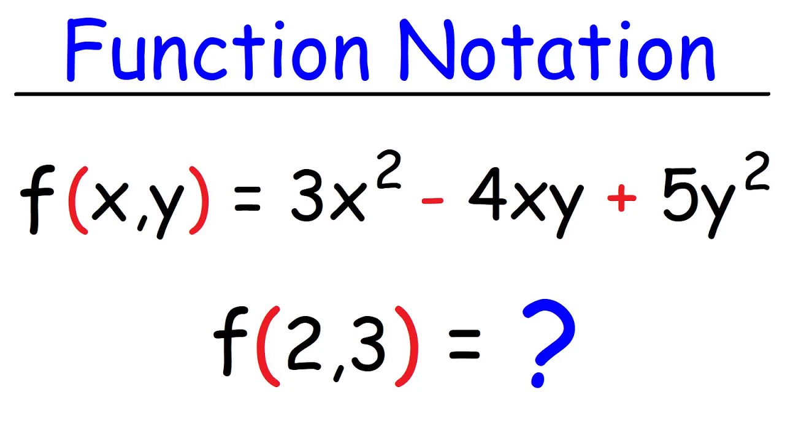

Discover

Evaluating Functions
Plan
Ask Luny
How do I find f(3)?
Replace x with 3 in the function. Then simplify the result.
Study guide
Worked example
If f(x) = 2x + 1, then f(3) = 2 × 3 + 1 = 7.
Try it next: find f(5).
Practice
A 10
B 11
C 12
Research
Vaswani et al. · 2017
Where is multi-head attention explained?
Section 3.2.2 explains how the model combines several attention heads.
learn-space.app